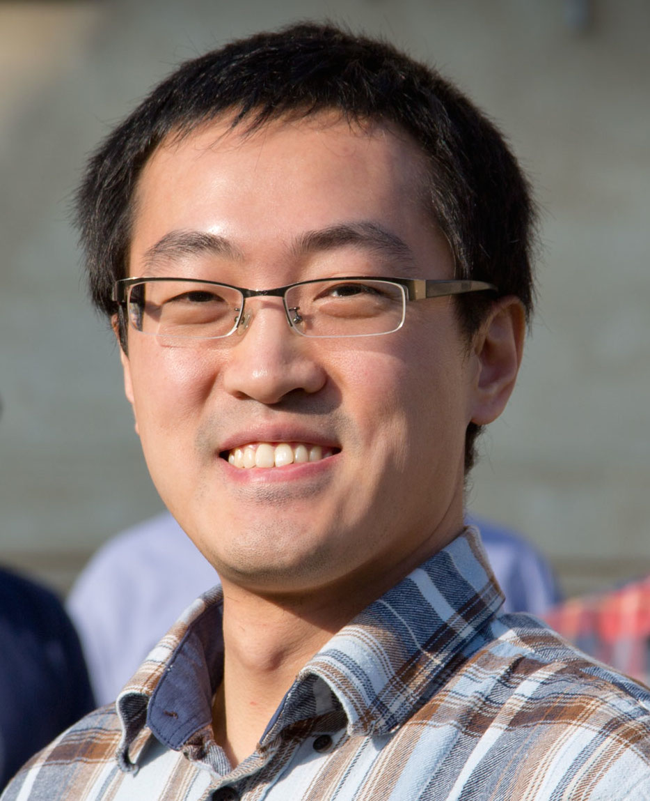

|  |
Weifeng Liu |
|
|---|---|---|
Department of Computer Science and Technology |
||
|
Short Bio
Weifeng Liu is currently a Full Professor at the Department of Computer Science and Technology of the
China University of Petroleum, Beijing,
China.
Formerly, he was a
Marie Curie Fellow
at the
Department of Computer Science
of the
Norwegian University of Science and Technology
in Trondheim, Norway.
He received his PhD in 2016 from the
Niels Bohr Institute
of the
University of Copenhagen
under advisor
Brian Vinter.
He has been shortly working as a Research Associate with
Iain S. Duff
at the
STFC Rutherford Appleton Laboratory
in 2016.
He also has been working as a Senior Researcher in high performance computing technology at the
SINOPEC Exploration and Production Research Institute
for about six years (2006-2012). He received his BE and ME degrees in computer science, both from the
China University of Petroleum, Beijing,
in 2002 and 2006, respectively.
|
News
|